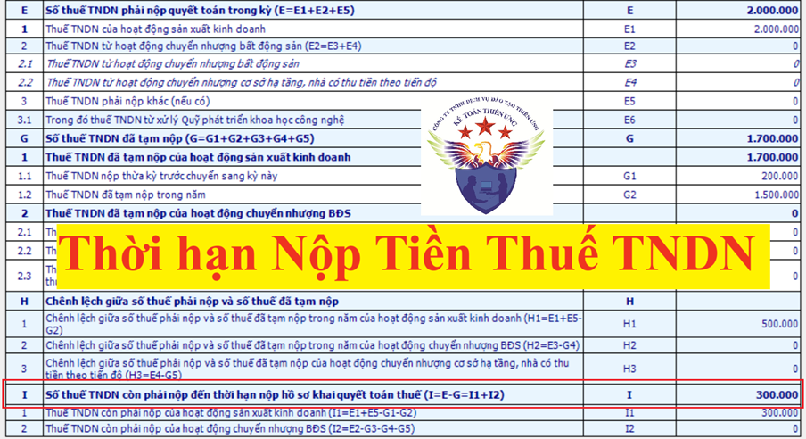

Quy định về thời hạn nộp tiền thuế thu nhập doanh nghiệp tạm tính quý và tiền thuế TNDN sau khi làm quyết toán năm 2026
1. Thời hạn nộp tiền thuế TNDN tạm tính quý:
Theo quy định tại Điều 55 của Luật Quản lý thuế số 38/2019/QH14 về thời hạn nộp thuế thì:
Đối với thuế thu nhập doanh nghiệp thì tạm nộp theo quý, thời hạn nộp thuế chậm nhất là ngày 30 của tháng đầu quý sau.
| Qúy tạm tính | Thời hạn nộp tiền thuế TNDN tạm tính của quý |
| Qúy 1 năm 2026 |
Hạn nộp tiền chậm nhất là ngày 04/05/2026
Vì hạn nộp là ngày 30/04/2026 nhưng ngày 30/4 và ngày 01/05 là ngày nghỉ lễ nên chuyển sang ngày làm việc tiếp theo là ngày 04/05/2025
Lễ 30/4 và 1/5 năm 2026: được nghỉ 4 ngày: Từ ngày 30/04/2026 đến hết ngày 03/05/2026 => Ngày làm tiếp theo là ngày: 04/05/2026 |
| Qúy 2 năm 2026 |
Chậm nhất là ngày 30/07/2026
|
| Qúy 3 năm 2026 |
Chậm nhất là ngày 30/10/2025
|
| Qúy 4 năm 2026 |
Chậm nhất là ngày 01/02/2027 (Vì ngày 30/01/202/ và ngày 31/01/2027 là ngày nghỉ thứ 7, chủ nhật nên được chuyển sang ngày làm việc tiếp theo)
|
Ví dụ 1: Công ty Kế Toán Diệu Tâm tạm tính quý 1/2026 ra số tiền thuế TNDN phải nộp là 5.000.000đ thì hạn nộp số tiền thuế TNDN tạm tính 5.000.000 của quý 1 này về NSNN: chậm chậm nhất là ngày 04/05/2026
Ví dụ 2: Công ty Kế Toán Diệu Tâm tạm tính quý 2/2026 ra không phải nộp tiền thuế TNDN
Qúy 2 này công ty Diệu Tâm có nhiều chi phí được trừ hơn doanh thu tính thuế và thu nhập khác nên Thu nhập chịu thuế và Thu nhập tính thuế đều nhỏ hơn không
=> Tại quý 2 này Công ty Diệu Tâm không phải nộp tiền thuế TNDN tạm tính quý và cũng không phải làm tờ khai hay thông báo gì đến cơ quan thuế cả
Lưu ý: => Tại quý 2 này Công ty Diệu Tâm không phải nộp tiền thuế TNDN tạm tính quý và cũng không phải làm tờ khai hay thông báo gì đến cơ quan thuế cả
Theo quy định tại Nghị định 91/2022/NĐ-CP sửa đổi khoản 6 Điều 8 Nghị định 126/2020/NĐ-CP như sau:
“Tổng số thuế thu nhập doanh nghiệp đã tạm nộp của 04 quý không được thấp hơn 80% số thuế thu nhập doanh nghiệp phải nộp theo quyết toán năm. Trường hợp người nộp thuế nộp thiếu so với số thuế phải tạm nộp 04 quý thì phải nộp tiền chậm nộp tính trên số thuế nộp thiếu kể từ ngày tiếp sau ngày cuối cùng của thời hạn tạm nộp thuế thu nhập doanh nghiệp quý 04 đến ngày liền kề trước ngày nộp số thuế còn thiếu vào ngân sách nhà nước.”
Nghị định 91/2022/NĐ-CP có hiệu lực từ ngày 30/10/2022
Chi tiết về cách tính tiền phạt chậm nộp tiền thuế TNDN tạm tính thì các bạn xem tại đây: Cách tính tiền phạt chậm nộp thuế TNDN tạm tính quý 2026
2. Thời hạn nộp tiền thuế TNDN sau quyết toán:
Theo quy định tại Điều 55 của Luật Quản lý thuế số 38/2019/QH14 về thời hạn nộp thuế thì:
Điều 55. Thời hạn nộp thuế
1. Trường hợp người nộp thuế tính thuế, thời hạn nộp thuế chậm nhất là ngày cuối cùng của thời hạn nộp hồ sơ khai thuế. Trường hợp khai bổ sung hồ sơ khai thuế, thời hạn nộp thuế là thời hạn nộp hồ sơ khai thuế của kỳ tính thuế có sai, sót.
Đối với thuế thu nhập doanh nghiệp thì tạm nộp theo quý, thời hạn nộp thuế chậm nhất là ngày 30 của tháng đầu quý sau.
Đối với dầu thô, thời hạn nộp thuế tài nguyên, thuế thu nhập doanh nghiệp theo lần xuất bán dầu thô là 35 ngày kể từ ngày xuất bán đối với dầu thô bán nội địa hoặc kể từ ngày thông quan hàng hóa theo quy định của pháp luật về hải quan đối với dầu thô xuất khẩu.
Đối với khí thiên nhiên, thời hạn nộp thuế tài nguyên, thuế thu nhập doanh nghiệp theo tháng.
Theo quy định tại Điều 44 của Luật Quản lý thuế số 38/2019/QH14 về thời hạn nộp hồ sơ khai thuế thì:
Điều 44. Thời hạn nộp hồ sơ khai thuế
1. Thời hạn nộp hồ sơ khai thuế đối với loại thuế khai theo tháng, theo quý được quy định như sau:
a) Chậm nhất là ngày thứ 20 của tháng tiếp theo tháng phát sinh nghĩa vụ thuế đối với trường hợp khai và nộp theo tháng;
b) Chậm nhất là ngày cuối cùng của tháng đầu của quý tiếp theo quý phát sinh nghĩa vụ thuế đối với trường hợp khai và nộp theo quý.
2. Thời hạn nộp hồ sơ khai thuế đối với loại thuế có kỳ tính thuế theo năm được quy định như sau:
a) Chậm nhất là ngày cuối cùng của tháng thứ 3 kể từ ngày kết thúc năm dương lịch hoặc năm tài chính đối với hồ sơ quyết toán thuế năm; chậm nhất là ngày cuối cùng của tháng đầu tiên của năm dương lịch hoặc năm tài chính đối với hồ sơ khai thuế năm;
b) Chậm nhất là ngày cuối cùng của tháng thứ 4 kể từ ngày kết thúc năm dương lịch đối với hồ sơ quyết toán thuế thu nhập cá nhân của cá nhân trực tiếp quyết toán thuế;
c) Chậm nhất là ngày 15 tháng 12 của năm trước liền kề đối với hồ sơ khai thuế khoán của hộ kinh doanh, cá nhân kinh doanh nộp thuế theo phương pháp khoán; trường hợp hộ kinh doanh, cá nhân kinh doanh mới kinh doanh thì thời hạn nộp hồ sơ khai thuế khoán chậm nhất là 10 ngày kể từ ngày bắt đầu kinh doanh.
3. Thời hạn nộp hồ sơ khai thuế đối với loại thuế khai và nộp theo từng lần phát sinh nghĩa vụ thuế chậm nhất là ngày thứ 10 kể từ ngày phát sinh nghĩa vụ thuế.
4. Thời hạn nộp hồ sơ khai thuế đối với trường hợp chấm dứt hoạt động, chấm dứt hợp đồng hoặc tổ chức lại doanh nghiệp chậm nhất là ngày thứ 45 kể từ ngày xảy ra sự kiện.
Vậy nên:
Thời hạn nộp tiền thuế TNDN khi quyết toán thuế năm: Chậm nhất là ngày cuối cùng của tháng thứ 3 kể từ ngày kết thúc năm dương lịch hoặc năm tài chính
Ví dụ: Vào tháng 3 năm 2026, công ty Kế Toán Diệu Tâm làm tờ khai quyết toán thuế TNDN năm 2025 ra số thuế TNDN còn phải nộp tại Chỉ tiêu [I] - Số thuế TNDN còn phải nộp đến thời hạn nộp hồ sơ khai quyết toán thuế trên tờ khai quyết toán thuế TNDN mẫu 03/TNDN là 300.000đ
=> Thời hạn nộp số tiền thuế TNDN còn phải nộp theo quyết toán là 300.000đ này về NSNN: chậm chậm nhất là ngày 31/03/2026

Lưu ý: Chỉ tiêu E là số tiền cả năm phải nộp
Nhưng được bù trừ 200.000đ tại chỉ tiêu G1 và đã tạm nộp tại các quý trong năm 2025 là 1.500.000đ tại chỉ tiêu G2 rồi nên chỉ cần nộp thêm (nộp nốt) số tiền 300.000đ tại chỉ tiêu I thôi
Kế Toán Diệu Tâm mời các bạn tham khảo thêm: